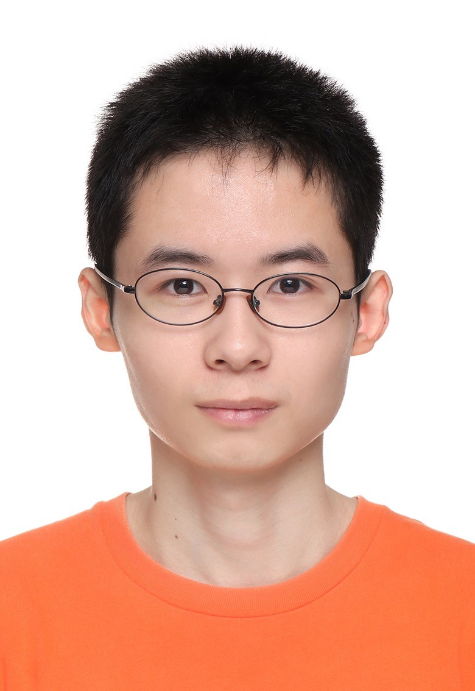

|  | Ph.D. student, |
I am currently applying for an abroad Ph.D. programme.
I have received the M. Eng. degree in the School of Optoelectronic Science and Engineering from Soochow University in 2022, where I am supervised by Prof. Jianhong Wu.
Before that, I obtained my B.Sc. degree in the School of Optoelectronic Science and Engineering in June 2019 from Soochow University.
Research Interests: Computer-generated hologram (CGH), 3D display, Assessment of 3D image quality, Amount of 3D information, Computational imaging, Image processing.
M. S., Soochow University, Suzhou, Jiangsu [Sep. 2019-Jun. 2022]
|
B. Sc, Soochow University, Suzhou, Jiangsu [Sep. 2015-Jun. 2019]
|
Assessment of 3D reconstructed image quality for computer-generated holographic 3D display
Tianshun Zhang，Yun Chen, Minjie Hua, Mingxin Zhou, Wenlong Zou, Jianhong Wu
SPIE Proceeding 12169B5 (Proc. SPIE), Mar. 2022. [PDF]
Enhancement of radiative cooling effect by bioinspired hollow-core triangular structures
Ke Li#, Tianshun Zhang#, Lei Pan, Xinyuan Zhang, Xiudong Xu, Shuliang Dou, Yao Li and Yaohui Zhan
Journal of Physics: Conference Series 2185 012007(J. Phys.: Conf. Ser. ), Nov. 2021. [PDF]
Convolutional Neural Network for Phase-Only Hologram Optimization Based on the Point Source Method With the Holographic Viewing-Window
Yun Chen, Tianshun Zhang, Minjie Hua, Mingxin Zhou, Jianhong Wu
IEEE Photonics Journal (IEEE PHOTONICS J), Aug. 2022. [PDF]
Holographic near-eye display based on complex amplitude modulation with band-limited zone plates
Yun Chen, Minjie Hua, Tianshun Zhang, Mingxin Zhou, Jianhong Wu and Wenlong Zou
Opt. Express 29, 22749-22760 (OE), Jul. 2021. [PDF]
A speckle noise suppression method in phase-only holographic display based on an improved Gerchberg–Saxton algorithm
Minjie Hua, Yun Chen, Tianshun Zhang, Mingxin Zhou, Wenlong Zou, Jianhong Wu
Optik (OPTIK), Nov. 2021. [PDF]
Sept.2019-May.2022 TA , General Physics Experiment(Undergraduate courses), Soochow University
The experiment of measuring the average wavelength of sodium light by Michelson interferometer
The experiment of measuring the radius of curvature of plano-convex lens with Newton's rings
Sep. 2019-Jun. 2022 - Research Assistant, supervised by Professor Jianhong Wu, Soochow University
Dissertation: Research on amount of 3D information in CGH and its evaluation method (in Chinese)
Sep. 2016-Jun. 2019 - Participate in the tutorial system, supervised by Associate Professor Yaohui Zhan, Soochow University
Research direction: Design and simulation of passive cooling film
IELTS: 6.5
Listening: 6 Reading: 7.5 Writing: 6 Speaking: 6
MATLAB, Mathematica, C language, MAYA, COMSOL, AutoCAD, Adobe
Team player, friendly, positive and self-driven
Hobbies: Swimming, Playing badminton, Reading, Cycling…